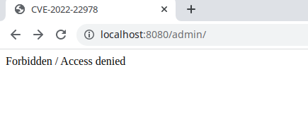

Spring Security Authorization Bypass in RegexRequestMatcher (CVE-2022-22978)¶
The Spring Security framework is used to provide security authentication functionality in the Spring framework. In Spring Security versions 5.5.6 and 5.6.3 and older unsupported versions, applications using RegexRequestMatcher with . in the regular expression are possibly vulnerable to an authorization bypass.
References:
Vulnerability Environment¶
Execute the following command to start a Web application based on Spring Security 5.6.3:
docker compose up -d
After the server starts, browse to http://your-ip:8080/admin to see that access to the admin page is blocked.

Vulnerability Reproduce¶
Send the following request to access the admin page that bypassed the authentication: